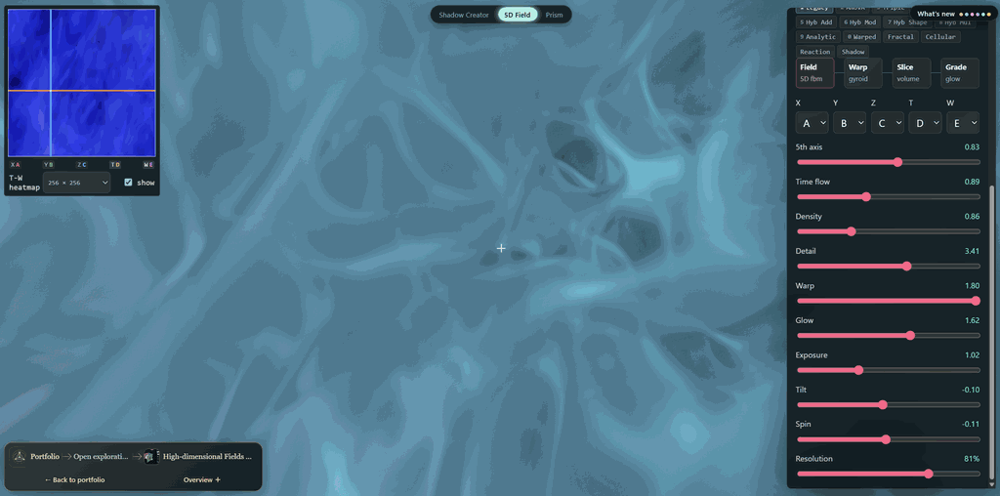
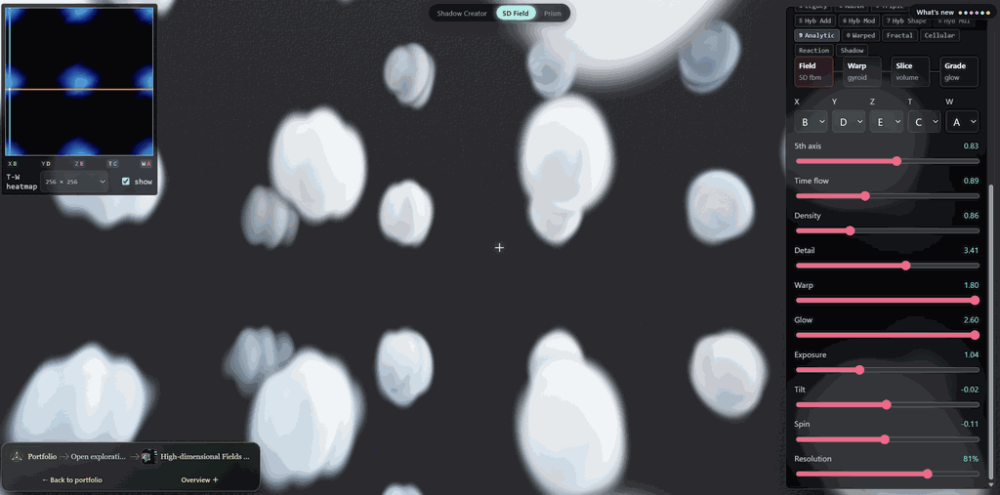
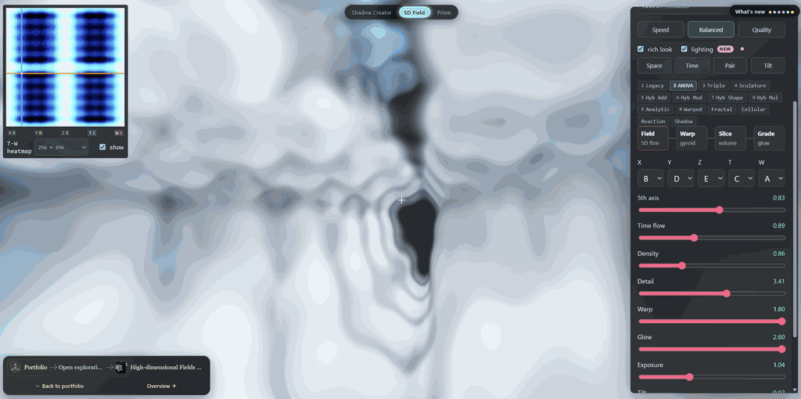
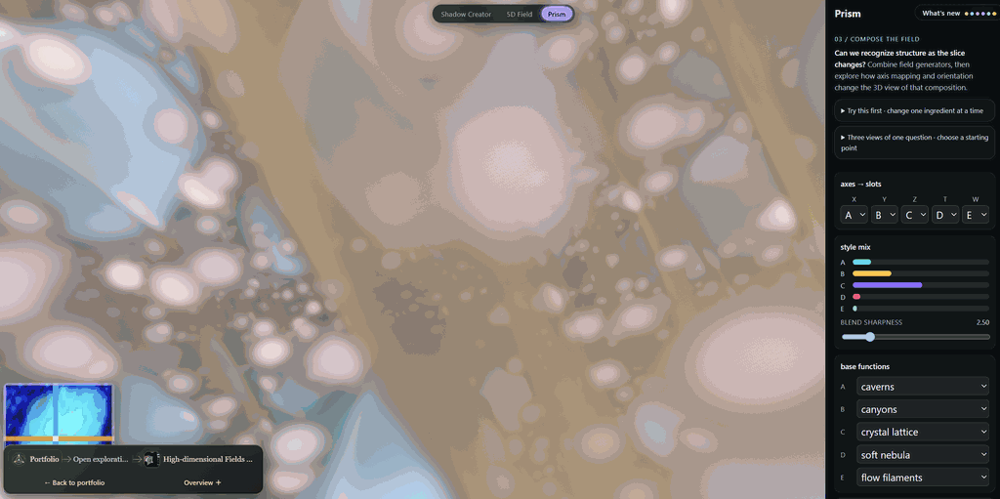

Interactive application WIP
Interactive Video
Overview · selected highlights
High-dimensional Fields & Shadow Design
Start with prescribed shadows and ask what higher-dimensional object could produce them. A 4D visual hull makes that inverse problem concrete; separate five-dimensional field explorers use the extra coordinates to create continuously changing, procedural forms.
RotateSliceProject
- ▱
Specify the shadows
Choose silhouettes or target volumes and their projection directions.
- ∩
Carve the inverse
Intersect the lifted constraints and inspect conflicting projections.
- w
Move through a slice
Change an extra coordinate to reveal a section of the field.
- ∞
Compose continuous forms
Use per-axis generators and interaction terms to compose a looping field, then explore its slices.
More dimensions add freedom, but matching projections and sustaining animation remain different design problems.



